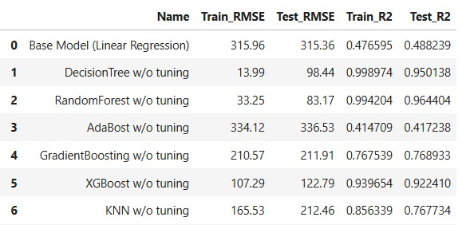
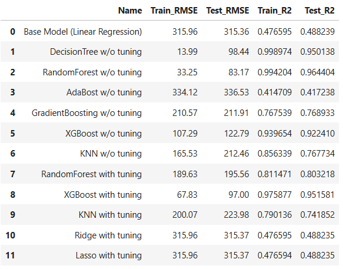
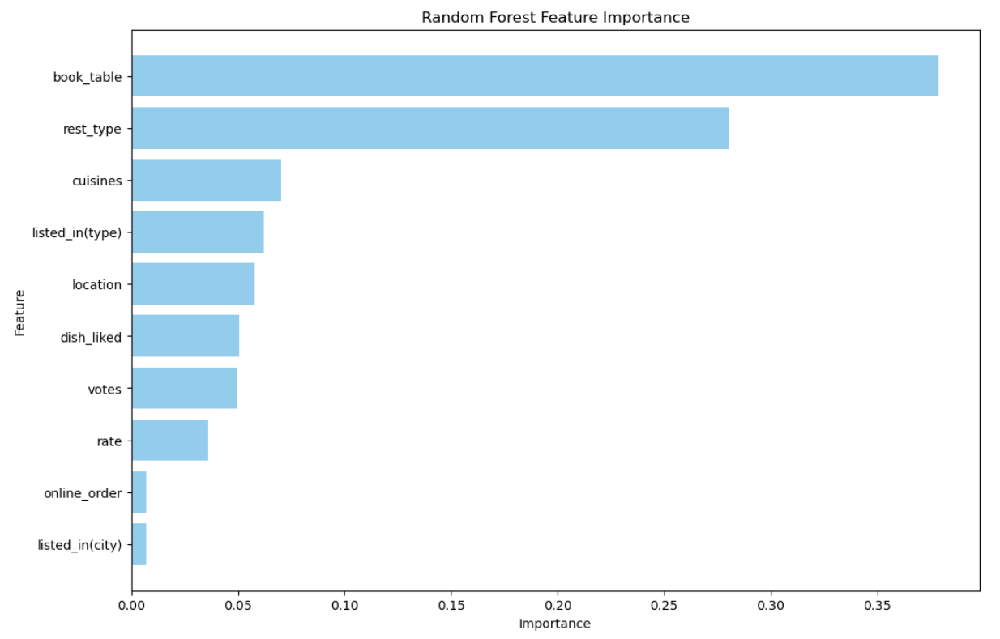

Dataset Understanding
In the evolving restaurant industry, data-driven decision-making is crucial for both new and established businesses. This project uses real-world restaurant data to solve two core problems using machine learning:
- Predicting the cost for two people based on restaurant characteristics.
- Classifying whether an order is placed online or offline.
These insights help restaurants optimize their pricing strategies and digital operations, while giving platforms like Zomato valuable tools to support their partners. Using a mix of regression and classification models, the project delivers actionable business recommendations powered by interpretable machine learning.
Data Preprocessing
The raw dataset initially contained several formatting issues, including missing values, categorical strings, and unnecessary columns. Label encoding was applied to handle categorical variables, missing cost and rating data were filled using median imputation, and feature scaling was performed. These preprocessing steps cleaned and prepared the dataset for regression modeling.
Exploratory Data Analysis
The distribution of the target variable — cost for two people — showed a clear right skew, with a few restaurants being significantly more expensive. Irrelevant fields were removed, categorical variables were label-encoded, and numerical features were scaled using StandardScaler. To assess feature significance, t-tests were performed, revealing strong correlations between cost and features such as location, rating, and restaurant type.
Modeling
Initial modeling began with simple linear regression, which exhibited clear underfitting. The relationship between features such as restaurant type and price was found to be non-linear, prompting a shift to tree-based models. Among these, Random Forest performed best out of the box, achieving a test R² score of 0.96.

RandomizedSearchCV was employed to tune the Random Forest model and address overfitting. Interestingly, the untuned model produced a lower test RMSE but showed signs of overfitting due to an extremely low training error. After tuning, the model became more generalizable and balanced, albeit with a slightly higher RMSE. This demonstrated that hyperparameter tuning is not solely focused on maximizing accuracy, but rather on enhancing model consistency and fairness on unseen data.

Insights & Feature Interpretation
To interpret the model, feature importances from a decision tree were analyzed. The most influential predictors of cost were found to be book_table and rest_type, which aligns with expectations, as premium restaurants often require reservations. In contrast, online_order showed minimal impact on pricing decisions.

- Table booking availability and restaurant type are the strongest predictors of cost — these are operational choices owners can control.
- Customer engagement metrics like votes and ratings, while useful for reviews, play a smaller role in predicting actual pricing.
- Features like online ordering and city listing have negligible impact on pricing strategy.
For restaurants aiming to position themselves as premium or justify higher pricing, offering table reservations and adopting higher-end formats such as fine dining can serve as strong signals of value to customers. These features are commonly associated with upscale experiences and may influence customer perception and willingness to pay.